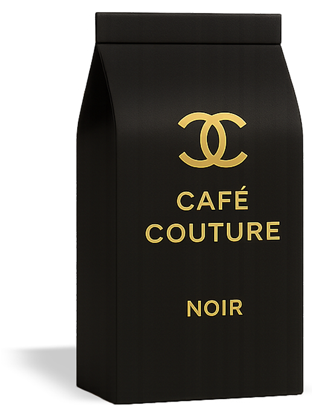
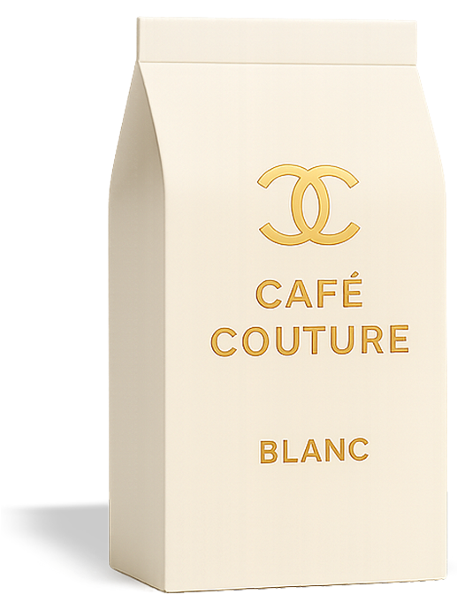
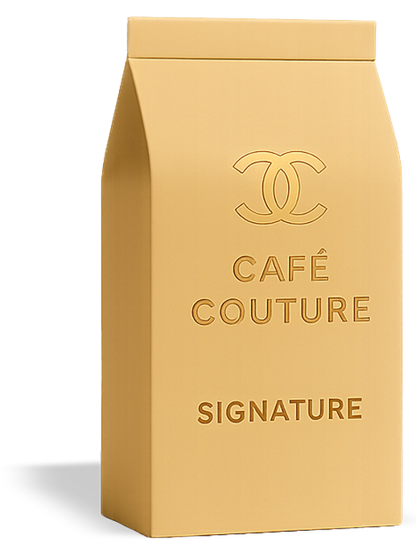
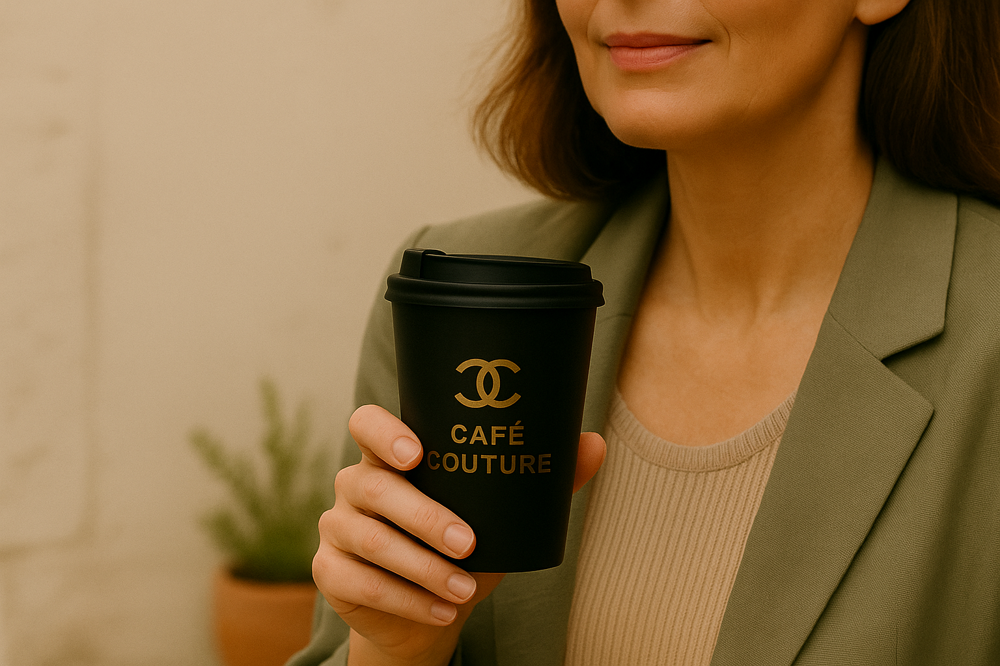

Die Essenz
Café Couture verbindet Kaffeekultur mit Achtsamkeit, Herkunft und Werten.
Ein Moment für bewussten Genuss – sinnvoll, ästhetisch, wirkungsvoll.
Transparente Herkunft und fair gehandelte Bohnen
Gestaltung mit Haltung und Bedeutung
Bewusster Genuss mit jedem Schluck
Die Kollektion
Wähle bewusst – jede Sorte vereint Herkunft, Qualität und Achtsamkeit.

Erdig & kraftvoll

Mild & klar

Harmonisch & vielseitig

Im Herzen der Stadt
Ein Ort für bewusste Pausen – im Einklang mit Stil, Zeit und Substanz.
Regional gerösteter Kaffee, natürliche Materialien, ruhige Atmosphäre.
Rue Cambon, Paris
Mo-Sa, 10-19 Uhr
Stilvolles Interieur
@cafecouture
Achtsam gestaltet. Sinnlich erlebt. Inspiriert durch das Wesentliche.